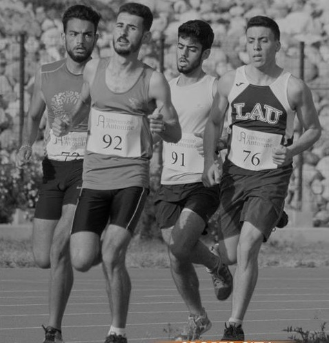

|  |
Armand Ismaelarmandismael@lau.edu - 79 174856 |
IT Support – jul 2017-Present
LAU - Lebanese American University
Blat
Responsibilities:
IT Support – May 2017-jul 2017
LIS - Leaders Information Systems
Jounieh
Responsibilities:
Lab consultant – Aug 2016-May 2017
LAU - Lebanese American University
Blat
Responsibilities:
Internship – August 2015 – July 2015
ComputerLand
Jounieh
Responsibilities:
BS in Computer Science, August 2016 - Present.
Lebanese American University (LAU)
BT in Information Technology (IT), September 2016 – June 2016
Institut Mgr. Cortbawi,
Jounieh
| Arabic | French | English | Italian |
|---|---|---|---|
| Mother Language | Fluent in speaking, reading and writing | Fluent in speaking, reading and writing | Basics |
My main interest is Computing I also like running, I have some Cross-Country Awards
(Marathon Ghineh 2013, 2014, and 2015 first place)
References are available on request.